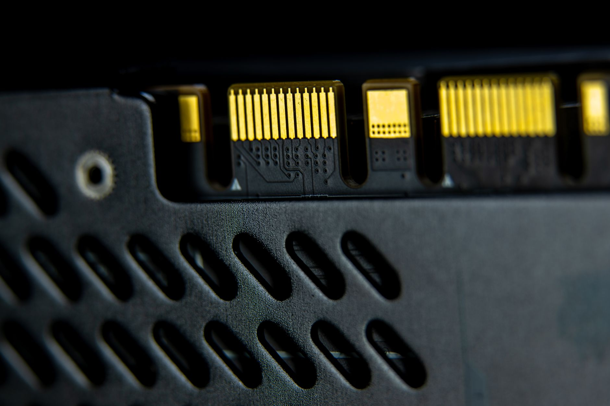

美 완성차 중국 전장부품 퇴출, 韓 소재 수혜 윤곽

GM·포드·스텔란티스(빅3)는 2024년 하반기부터 UFLPA(위구르강제노동방지법) 및 CHIPS Act 공급망 요건을 근거로 중국산 전장 MCU·센서·커넥터 부품 비중을 2026년 모델연도(MY2026)까지 50% 이상 축소하겠다고 공식화했다.
미국 자동차산업협회(AAA) 추산 기준, 현재 미국 완성차 1대당 중국산 전장 부품 탑재 비율은 평균 23%다. 이를 12% 이하로 낮추려면 연간 약 40억 달러(약 5.4조 원) 규모의 공급처 교체가 필요하다.
한국 전장 소재 기업의 직접 수혜 추산치는 연간 최대 8억~9억 달러(약 1.1~1.2조 원)로 집계된다. 이미 삼성전기·LG이노텍·LS일렉트릭 등이 Tier-1 납품 자격 재심사(재인증) 절차에 진입했다.
그러나 완성차 OEM 인증 프로세스는 통상 18~24개월이 소요된다. MY2026 적용을 역산하면 2025년 1분기가 실질 마감이었다는 의미이며, 현 시점에서 신규 진입 기업의 MY2026 납품은 사실상 불가능하다. MY2027 이후가 현실적 진입 타임라인이다.
미국 완성차의 중국 전장 부품 퇴출은 단순한 관세 회피가 아닌 구조적 공급망 재설계다. UFLPA 위반 적발 시 해당 차종 전체의 미국 통관이 차단되는 '하드 리스크'가 존재하기 때문에 완성차 업체로서는 비용보다 리스크 제거가 우선이다.
공급자 입장에서 이 흐름은 '가격 경쟁'이 아닌 '인증 경쟁'이다. 중국보다 싸게 만들 필요가 없다. OEM 스펙 인증서와 IATF 16949 인증을 먼저 확보한 기업이 10년 장기공급계약을 가져간다. 한국 소부장 기업이 지금 당장 해야 할 일은 가격 제안서가 아니라 인증 서류 패키지 완성이다.
삼성전기(MLCC·패키지 기판)·LG이노텍(카메라모듈·통신 부품)·LS일렉트릭(전장 커넥터)은 기존 Tier-1 관계를 기반으로 재인증 패스트트랙 혜택을 받을 가능성이 높다. 이들 3사의 미국 전장 매출은 2024년 합산 약 2.3조 원으로 수혜 반영 시 30~40% 성장 여력이 있다.
일본 Murata·TDK도 반사이익을 누리지만, IATF 인증 보유 한국 중견 기업(예: 아모텍·비에이치)은 틈새 품목(NTC 서미스터, 안테나 모듈)에서 기존 일본 단가 대비 15~20% 낮은 가격으로 진입 기회를 갖는다.
중국 전장 부품 Tier-2 공급자들은 미국 시장에서 사실상 퇴출 수순이다. BYD 공급망에 속한 중국 전장 MCU 업체들은 단기적으로 유럽 시장으로 물량을 돌리겠지만, EU의 공급망 실사 지침(CSDDD) 강화로 2027년부터 유럽에서도 유사한 압박을 받을 것이다.
MY2026 인증 마감을 놓친 한국 신규 진입 기업은 2년을 더 기다려야 한다. 인증 준비에 투입한 초기 비용(통상 5~15억 원 규모)이 매몰될 위험이 있다.
MY2027 납품을 목표로 하는 기업은 2025년 4분기 이내 OEM 품질 게이트웨이(PPAP·APQP 패키지) 제출을 완료해야 한다. 이미 늦은 기업은 Tier-1(덴소·보쉬·앱티브) 경유 납품 전략으로 선회해 인증 리드타임을 단축하는 것이 현실적이다.
투자자는 전장 소부장 기업의 '미국 OEM 인증 진행 상황'을 IR 자료에서 직접 확인해야 한다. '공급 검토 중'과 'PPAP 완료'는 매출 반영 시점에서 24개월 차이가 난다.
실제 조달 현장에서는 — OEM 인증 서류를 받아도 '단종(EOL) 리스크'가 변수다. 중국산 MCU를 한국·일본 제품으로 교체할 때 핀 호환성과 펌웨어 인증을 별도로 진행해야 하며, 이 과정에서 엔지니어링 샘플 검증에만 6~9개월이 추가 소요된다. 납기 목표를 역산할 때 이 기간을 반드시 포함해야 한다.
이 포스팅은 쿠팡 파트너스 활동의 일환으로 수수료를 제공받습니다.